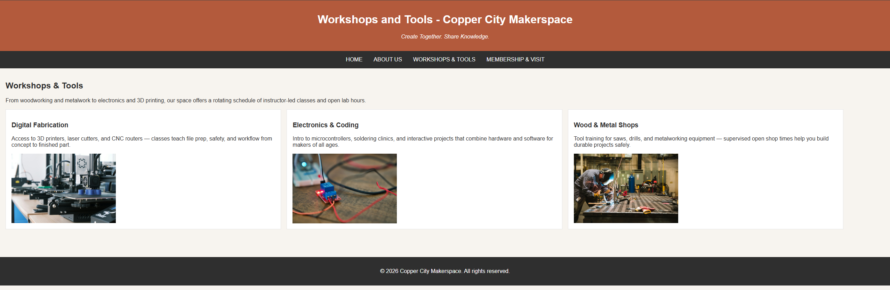
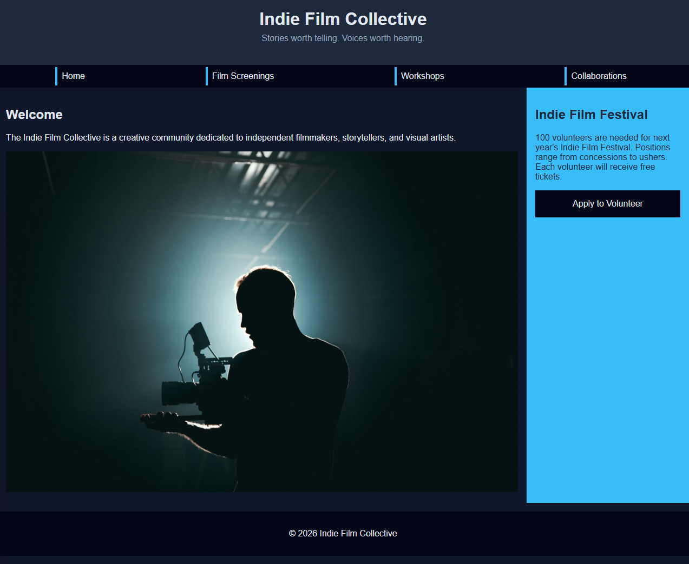

Project 1: Copper City Makerspace
This is one of the first builds I have completed, going over a small workshop company.

Project 2: Indie Film Collective
This project is designed to be a platform for independent filmmakers and their work, while also bringing awareness to the Indie Film Festival.
